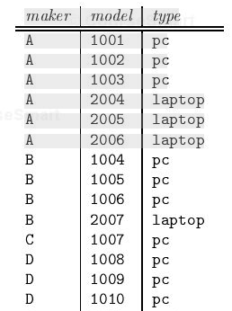
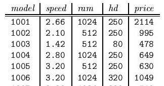
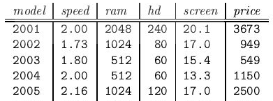
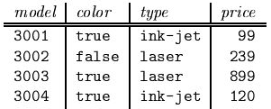

In this exercise we introduce one of our running examples of a relational database schema. The database schema consists of four relations, whose schemas are:
The Product relation gives the manufacturer, model number and type ( PC, laptop, or printer ) of various products. We assume for convenience that model numbers are unique over all manufacturers and product types ; that assumption is not realistic, and a real database would include a code for the manufacturer as part of the model number. The PC relation gives for each model number that is a PC the speed ( of the processor, in gigahertz ), the amount of RAM ( in megabytes ), the size of the hard disk ( in gigabytes ), and the price. The Laptop relation is similar, except that the screen size ( in inches ) is also included. The Printer relation records for each printer model whether the printer produces color output ( true, if so ), the process type ( laser or ink - jet, typically ), and the price.
Write the following declarations :
Product

PC

Laptop

Printer
